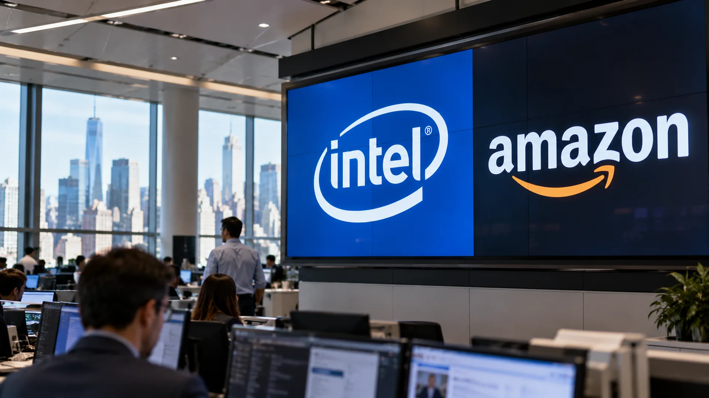

Intel's 28.6% Fall and Amazon's AI Spending Test Tech Stocks
Intel’s 28.6% decline and Amazon’s spending plans exposed different pressures on AI stocks, despite stronger demand in parts of their businesses.

Intel shares fell 28.6% on October 30 as investors reacted to the chipmaker's outlook. Amazon also faced scrutiny over rising spending on artificial-intelligence infrastructure. The companies reported different operating conditions, but both were judged on whether investment commitments could deliver sufficient future returns.
Intel's results were stronger than its forecast
Intel reported third-quarter revenue of $16.5 billion, an increase of 21% from a year earlier, and non-GAAP earnings of $0.52 a share. Those results were not the principal problem. Management forecast fourth-quarter revenue of $15 billion to $16 billion, and non-GAAP earnings of $0.25 a share, citing pressure in the personal-computer business and supply constraints. The outlook was worse than investors had expected. Investors punished the stock despite the improvement in reported quarterly performance.
Amazon's cash flow became the bigger concern
Amazon's third-quarter net sales increased 12% to $201.9 billion. Its cloud business, Amazon Web Services, grew sales by about 39% to $46 billion, the fastest growth rate in nearly five years. Operating income reached $28.1 billion. These figures, published in Amazon's official earnings release, are important counterweights to an overly simple narrative that demand for AI services has disappeared.
The difficulty lay in the cost of supplying that demand. Amazon reported a trailing-12-month free-cash-flow outflow of $42.4 billion, compared with positive free cash flow of $14.8 billion in the year-earlier period. Management said the deterioration primarily reflected spending on property and equipment, much of it tied to artificial intelligence. The company continued to expect around $220 billion in capital expenditure during 2026. Its fourth-quarter sales guidance of $240 billion to $247 billion also disappointed analysts at the midpoint, according to Reuters.
Technology shares bore the brunt
The Nasdaq Composite fell 2.9% on Friday, according to Reuters, while the Nasdaq-100 index closed at 28,384.85, down about 3.46% for the day according to Nasdaq index data. These are different benchmarks and should not be used interchangeably. The S&P 500 fell roughly 1.8%, according to Associated Press. Semiconductor shares also came under pressure, reflecting uncertainty about the pace and economics of AI investment.
A sharp fall on one day is not proof that the AI investment cycle is over. It does show that investors are increasingly differentiating between revenue growth, the amount of cash spent to achieve it and the likely returns on new capacity. The distinction matters for chip suppliers, cloud operators and the companies that finance new data centers. Readers can find additional context in TTN Finance's analysis of power constraints on AI data centers and its coverage of the Federal Reserve's October rate decision.
Sources and methodology
Primary sources and supporting reporting.